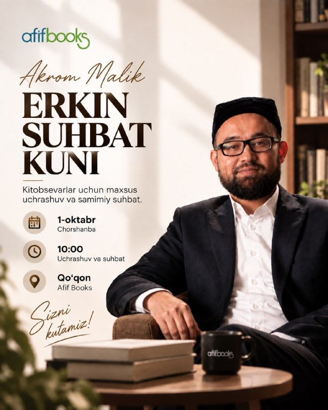

← Barcha e’lonlar
Kitobxonlar uchun maxsus uchrashuv! 🔔

🎉 O‘z asarlari bilan ko‘plab kitobsevarlarimiz qalbidan joy olgan yozuvchi Akrom Malik ishtirokida
1-oktabr kuni Afif Books’da “Erkin suhbat kuni” tashkil etiladi.
📅 1-oktabr
🕙 Soat: 10:00 da!
📍 Qo‘qon, Afif Books
Sevimli kitoblaringizni olib keling, muallif dastxatini oling va bu samimiy uchrashuvda ishtirok eting. ✍️📚
🎁 Sizni yana bir nechta yoqimli syurprizlar kutmoqda...
🔥 Akrom Malikning qaysi asarlarini sevib o‘qigansiz? Izohlarda yozib qoldiring!
📍 Qo‘qon shahar, Istiqlol ko‘chasi, 10-uy
📍 Mo‘ljal: Avto Card va Chopar Pizza yonida